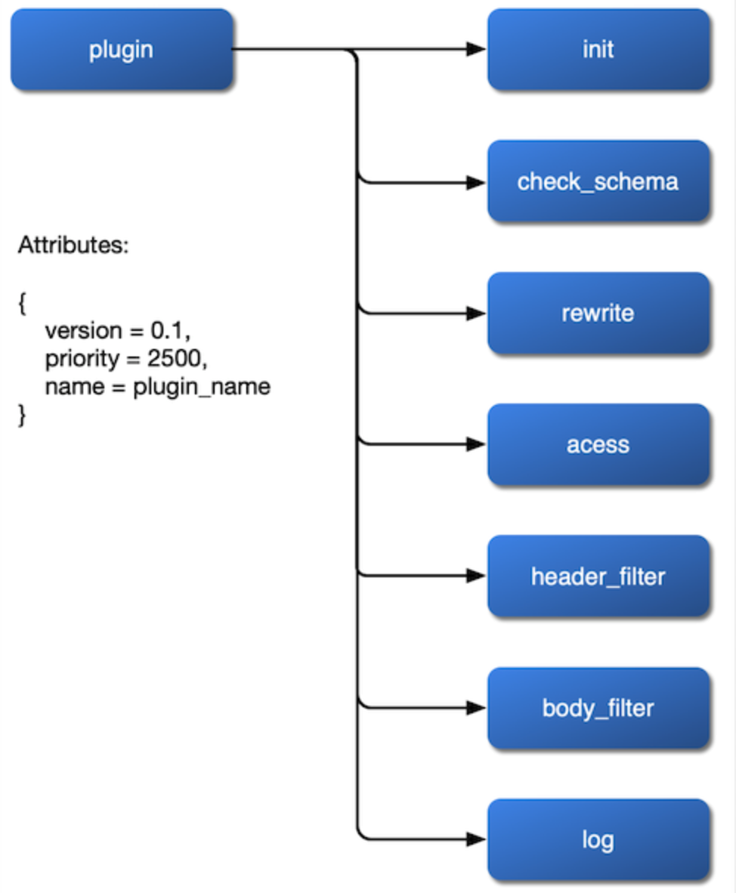
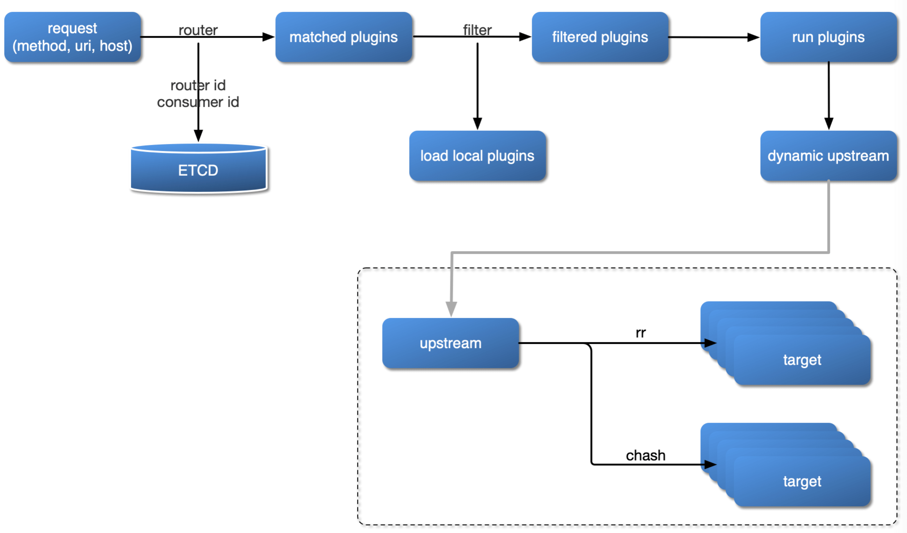

- 00 开篇词 OpenResty，为你打开高性能开发的大门.md.html
- 01 初探OpenResty的三大特性.md.html
- 02 如何写出你的“hello world”？.md.html
- 03 揪出隐藏在背后的那些子项目.md.html
- 04 如何管理第三方包？从包管理工具luarocks和opm说起.md.html
- 05 [视频]opm项目导读.md.html
- 06 OpenResty 中用到的 NGINX 知识.md.html
- 07 带你快速上手 Lua.md.html
- 08 LuaJIT分支和标准Lua有什么不同？.md.html
- 09 为什么 lua-resty-core 性能更高一些？.md.html
- 10 JIT编译器的死穴：为什么要避免使用 NYI ？.md.html
- 11 剖析Lua唯一的数据结构table和metatable特性.md.html
- 12 高手秘诀：识别Lua的独有概念和坑.md.html
- 13 [视频]实战：基于FFI实现的lua-resty-lrucache.md.html
- 14 答疑（一）：Lua 规则和 NGINX 配置文件产生冲突怎么办？.md.html
- 15 OpenResty 和别的开发平台有什么不同？.md.html
- 16 秒杀大多数开发问题的两个利器：文档和测试案例.md.html
- 17 为什么能成为更好的Web服务器？动态处理请求和响应是关键.md.html
- 18 worker间的通信法宝：最重要的数据结构之shared dict.md.html
- 19 OpenResty 的核心和精髓：cosocket.md.html
- 20 超越 Web 服务器：特权进程和定时任务.md.html
- 21 带你玩转时间、正则表达式等常用API.md.html
- 22 [视频]从一个安全漏洞说起，探寻API性能和安全的平衡.md.html
- 23 [视频]导读lua-resty-requests：优秀的lua-resty-_是如何编写的？.md.html
- 24 实战：处理四层流量，实现Memcached Server.md.html
- 25 答疑（二）：特权进程的权限到底是什么？.md.html
- 26 代码贡献者的拦路虎：test__nginx 简介.md.html
- 27 test__nginx 包罗万象的测试方法.md.html
- 28 test__nginx 还可以这样用？.md.html
- 29 最容易失准的性能测试？你需要压测工具界的“悍马”wrk.md.html
- 30 答疑（三）如何搭建测试的网络结构？.md.html
- 31 性能下降10倍的真凶：阻塞函数.md.html
- 32 让人又恨又爱的字符串操作.md.html
- 33 性能提升10倍的秘诀：必须用好 table.md.html
- 34 特别放送：OpenResty编码指南.md.html
- 35 [视频]实际项目中的性能优化：ingress-nginx中的几个PR解读.md.html
- 36 盘点OpenResty的各种调试手段.md.html
- 37 systemtap-toolkit和stapxx：如何用数据搞定“疑难杂症”？.md.html
- 38 [视频]巧用wrk和火焰图，科学定位性能瓶颈.md.html
- 39 高性能的关键：shared dict 缓存和 lru 缓存.md.html
- 40 缓存与风暴并存，谁说缓存风暴不可避免？.md.html
- 41 lua-resty-_ 封装，让你远离多级缓存之痛.md.html
- 42 如何应对突发流量：漏桶和令牌桶的概念.md.html
- 43 灵活实现动态限流限速，其实没有那么难.md.html
- 44 OpenResty 的杀手锏：动态.md.html
- 45 不得不提的能力外延：OpenResty常用的第三方库.md.html
- 46 答疑（四）：共享字典的缓存是必须的吗？.md.html
- 47 微服务API网关搭建三步曲（一）.md.html
- 48 微服务API网关搭建三步曲（二）.md.html
- 49 微服务API网关搭建三步曲（三）.md.html
- 50 答疑（五）：如何在工作中引入 OpenResty？.md.html
- 结束语 行百里者半九十.md.html
- 捐赠
48 微服务API网关搭建三步曲（二）
你好，我是温铭。
在明白了微服务 API 网关的核心组件和抽象概念后，我们就要开始技术选型，并动手去实现它了。今天，我们就分别来看下，路由、插件、schema 和存储这四个核心组件的技术选型问题。
存储
上节课我提到过，存储是底层非常关键的基础组件，它会影响到配置如何同步、集群如何伸缩、高可用如何保证等核心的问题，所以，我们把它放在最开始的位置来选型。
我们先来看看，已有的 API 网关是把数据存储在哪里的。Kong 是把数据储存在PostgreSQL 或者 Cassandra 中，而同样基于 OpenResty 的 Orange，则是存储在 MySQL 中。不过，这种选择还是有很多缺陷的。
第一，储存需要单独做高可用方案。PostgreSQL、MySQL 数据库虽然有自己的高可用方案，但你还需要 DBA 和机器资源，在发生故障时也很难做到快速切换。
第二，只能轮询数据库来获取配置变更，无法做到推送。这不仅会增加数据库资源的消耗，同时变更的实时性也会大打折扣。
第三，需要自己维护历史版本，并考虑回退和升级。如果用户发布了一个变更，后续可能会有回滚操作，这时候你就需要在代码层面，自己做两个版本之间的 diff，以便配置的回滚。同时，在系统自身升级的时候，还可能会修改数据库的表结构，所以代码层面就需要考虑到新旧版本的兼容和数据升级。
第四，提高了代码的复杂度。在实现网关的功能之外，你还需要为了前面 3 个缺陷，在代码层面去打上补丁，这显然会让代码的可读性降低不少。
第五，增加了部署和运维的难度。部署和维护一个关系型数据库并不是一件简单的事情，如果是一个数据库集群那就更加复杂了，并且我们也无法做到快速扩容和缩容。
针对这样的情况，我们应该如何选择呢？
我们不妨回到 API 网关的原始需求上来，这里存储的都是简单的配置信息，uri、插件参数、上游地址等，并没有涉及到复杂的联表操作，也不需要严格的事务保证。显然，这种情况下使用关系型数据库，可不就是“杀鸡焉用宰牛刀”吗？
事实上，本着最小化够用并且更贴近 K8s 的原则，etcd 就是一个恰到好处的选型了：
- API 网关的配置数据每秒钟的变化次数不会很多，etcd 在性能上是足够的；
- 集群和动态伸缩方面，更是 etcd 天生的优势；
- etcd还具备 watch 的接口，不用轮询去获取变更。
其实还有一点，可以让我们更加放心地选择 etcd——它已经是 K8s 体系中保存配置的默认选型了，显然已经经过了很多比 API 网关更加复杂的场景的验证。
路由
路由也是非常重要的技术选型，所有的请求都由路由筛选出需要加载的插件列表，逐个运行后，再转发给指定的上游。不过，考虑到路由规则可能会比较多，所以路由这里的技术选型，我们需要着重从算法的时间复杂度上去考量。
我们先来看下，在 OpenResty 下有哪些现成的路由可以拿来使用。老规矩，让我们在 awesome-resty 的项目中逐个查找一遍，这其中就有专门的 Routing Libraries：
• lua-resty-route — A URL routing library for OpenResty supporting multiple route matchers, middleware, and HTTP and WebSockets handlers to mention a few of its features
• router.lua — A barebones router for Lua, it matches URLs and executes Lua functions
• lua-resty-r3 — libr3 OpenResty implementation, libr3 is a high-performance path dispatching library. It compiles your route paths into a prefix tree (trie). By using the constructed prefix trie in the start-up time, you may dispatch your routes with efficiency
• lua-resty-libr3 — High-performance path dispatching library base on libr3 for OpenResty
你可以看到，这里面包含了四个路由库的实现。前面两个路由都是纯 Lua 实现，相对比较简单，所以有不少功能的欠缺，还不能达到生成的要求。
后面两个库，其实都是基于 libr3 这个 C 库，并使用 FFI 的方式做了一层封装，而 libr3 自身使用的是前缀树。这种算法和存储了多少条规则的数目 N 无关，只和匹配数据的长度 K 有关，所以时间复杂度为 O(K)。
但是， libr3 也是有缺点的，它的匹配规则和我们熟悉的 Nginx location 的规则不同，而且不支持回调。这样，我们就没有办法根据请求头、cookie、Nginx 变量来设置路由的条件，对于 API 网关的场景来说显然不够灵活。
不过，虽说我们尝试从 awesome-resty 中找到可用路由库的努力没有成功，但 libr3 的实现，还是给我们指引了一个新的方向：用 C 来实现前缀树以及 FFI 封装，这样应该可以接近时间复杂度和代码性能上的最优方案。
正好， Redis 的作者开源了一个基数树，也就是压缩前缀树的 C 实现。顺藤摸瓜，我们还可以找到 rax 在 OpenResty 中可用的 FFI 封装库，它的示例代码如下：
local radix = require("resty.radixtree")
local rx = radix.new({
{
path = "/aa",
host = "foo.com",
method = {"GET", "POST"},
remote_addr = "127.0.0.1",
},
{
path = "/bb*",
host = {"*.bar.com", "gloo.com"},
method = {"GET", "POST", "PUT"},
remote_addr = "fe80:fe80::/64",
vars = {"arg_name", "jack"},
}
})
ngx.say(rx:match("/aa", {host = "foo.com",
method = "GET",
remote_addr = "127.0.0.1"
}))
从中你也可以看出， lua-resty-radixtree 支持根据 uri、host、http method、http header、Nginx 变量、IP 地址等多个维度，作为路由查找的条件；同时，基数树的时间复杂度为 O(K)，性能远比现有 API 网关常用的“遍历+hash 缓存”的方式，来得更为高效。
schema
schema 的选择其实要容易得多，我们在前面介绍过的 lua-rapidjson ，就是非常好的一个选择。这部分你完全没有必要自己去写一个，json schema 已经足够强大了。下面就是一个简单的示例：
local schema = {
type = "object",
properties = {
count = {type = "integer", minimum = 0},
time_window = {type = "integer", minimum = 0},
key = {type = "string", enum = {"remote_addr", "server_addr"}},
rejected_code = {type = "integer", minimum = 200, maximum = 600},
},
additionalProperties = false,
required = {"count", "time_window", "key", "rejected_code"},
}
插件
有了上面存储、路由和 schema 的基础，上层的插件应该如何实现，其实就清晰多了。插件并没有现成的开源库可以使用，需要我们自己来实现。插件在设计的时候，主要有三个方面需要我们考虑清楚。
首先是如何挂载。我们希望插件可以挂载到 rewrite、access、header filer、body filter 和 log阶段，甚至在 balancer 阶段也可以设置自己的负载均衡算法。所以，我们应该在 Nginx 的配置文件中暴露这些阶段，并在对插件的实现中预留好接口。
其次是如何获取配置的变更。由于没有关系型数据库的束缚，插件参数的变更可以通过 etcd 的 watch 来实现，这会让整体框架的代码逻辑变得更加明了易懂。
最后是插件的优先级。具体来说，比如，身份认证和限流限速的插件，应该先执行哪一个呢？绑定在 route 和绑定在 service 上的插件发生冲突时，又应该以哪一个为准呢？这些都是我们需要考虑到位的。
在梳理清楚插件的这三个问题后，我们就可以得到插件内部的一个流程图了：

架构
自然，当微服务 API 网关的这些关键组件都确定了之后，用户请求的处理流程，也就随之尘埃落定了。这里我画了一张图来表示这个流程：

从这个图中我们可以看出，当一个用户请求进入 API 网关时，
- 首先，会根据请求的方法、uri、host、请求头等条件，去路由规则中进行匹配。如果命中了某条路由规则，就会从 etcd 中获取对应的插件列表。
- 然后，和本地开启的插件列表进行交集，得到最终可以运行的插件列表。
- 再接着，根据插件的优先级，逐个运行插件。
- 最后，根据上游的健康检查和负载均衡算法，把这个请求发送给上游。
当架构设计完成后，我们就胸有成竹，可以去编写具体的代码了。这其实就像盖房子一样，只有在你拥有设计的蓝图和坚实的地基之后，才能去做砖瓦堆砌的具体工作。
写在最后
其实，通过这两节课的学习，我们已经做好了产品定位和技术选型这两件最重要的事情，它们都比具体的编码实现更为关键，也希望你可以更用心地去考虑和选择。
那么，在你的实际工作中，你是否使用过 API 网关呢？你们公司又是如何做 API 网关的选型的呢？欢迎留言和我分享你的经历和收获，也欢迎你把这篇文章分享出去，和更多的人一起交流、进步。
© 2019 - 2023 Liangliang Lee. Powered by gin and hexo-theme-book.